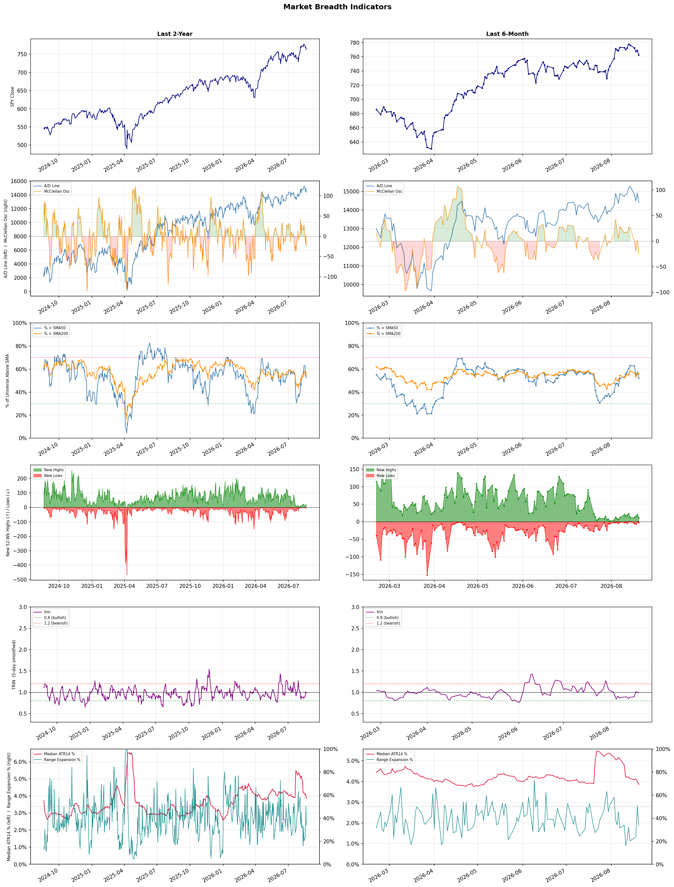

A daily market breadth and sector rotation report for active investors
| Item | Read |
|---|---|
| Regime | Selective Risk-On |
| Risk posture | Selective |
| Universe | 1,331 stocks tracked · 11 new 52-week highs · 30 active swing setups |
| Breadth | 52.2% of tracked stocks are above SMA50 — neutral range, new highs exceed new lows (11 vs 3), McClellan oscillator (breadth momentum) is negative at -25.1 |
| Leadership | Diagnostics & Research, Health Information Services, and Oil & Gas Refining & Marketing |
| Weakest groups | Utilities - Independent Power Producers, Solar, and Footwear & Accessories |
Use this report to prioritize research and chart review; validate entries, stops, liquidity, earnings, and risk before acting.
| Item | Read |
|---|---|
| Primary read | Selective Risk-On regime with Selective risk posture. |
| Research queue | TWST, PSNL, WGS, IQV, OPK |
| Leadership focus | Diagnostics & Research, Health Information Services, and Oil & Gas Refining & Marketing |
| Caution list | Utilities - Independent Power Producers, Solar, and Footwear & Accessories |
| Review prompt | Check extension risk, chart location, fundamentals, valuation, and earnings before using any research row. |
| Item | Read |
|---|---|
| Primary read | 2 active risk warnings; use screen output as watchlist input only. |
| Bullish screens | TXG, ATAI, IOVA, APA, COP |
| Bearish screens | none |
| Alerts / levels | Automated trigger, stop, ATR, liquidity, reward/risk, and event-risk levels are pending future enrichment. |
| Review prompt | Open the linked chart, define trigger and invalidation, then check liquidity and event risk independently. |
Risk Posture: Selective — screen backdrop supports selective research in leading industries
Metric context: McClellan below -50 = elevated selling pressure; below -100 = washout territory. Range Expansion = share of stocks with daily range above their 20-day average. Signal Density = share of tracked names appearing in signal screens.
| Breadth Date | % > SMA50 | % > SMA200 | New Highs | New Lows | McClellan | Median Range | Avg Range | Median ATR14 | Range Expansion | Signal Density |
|---|---|---|---|---|---|---|---|---|---|---|
| 2026-08-20 | 52.2% | 55.9% | 11 | 3 | -25.1 | 3.1% | 3.6% | 3.8% | 33.8% | 7.9% |

Prior comparison date: August 19, 2026
| Metric | Prior | Current | Change |
|---|---|---|---|
| Regime | Selective Risk-On | Selective Risk-On | unchanged |
| Risk Posture | Selective | Selective | unchanged |
| % > SMA50 | 59.3% | 52.2% | -7.2 pts |
| % > SMA200 | 61.2% | 55.9% | -5.3 pts |
| New Highs | 37 | 11 | -26 |
| New Lows | 2 | 3 | -1 |
Top-10 industries entering: Copper and Oil & Gas E&P. Top-10 industries leaving: Medical Care Facilities and Medical Instruments & Supplies. New multi-signal long setups: APA, ATAI, BXSL, COP, IOVA, MRVL, TXG. New multi-signal short setups: none.
| Status | Tickers | Read |
|---|---|---|
| Added | A, ABSI, AEM, AGI, APA, ARIS, ATAI, COP | New technical screen matches vs prior report. |
| Removed | ABNB, ABT, ACAD, AVR, BKSY, DX, DXCM, EC | No longer present in today's technical screen matches. |
| Still Active | APPS, BRO, BXSL, CERT, DOCS, EQNR, FSLY, GRND | Appeared in both current and prior reports. |
| Promoted | BXSL | Model Screen Score improved by at least 15 points. |
| Downgraded | none | Model Screen Score declined by at least 15 points. |
| Direction | Industry | ETF | Prior Rank | Current Rank | Days | Rank Change |
|---|---|---|---|---|---|---|
| Rose | Gold | GDX | 86 | 8 | 35 | +78 |
| Rose | Copper | COPX | 85 | 9 | 42 | +76 |
| Rose | Oil & Gas E&P | XOP | 81 | 10 | 42 | +71 |
| Rose | Oil & Gas Integrated | XLE | 78 | 12 | 42 | +66 |
| Rose | Financial Data & Stock Exchanges | N/A | 70 | 17 | 42 | +53 |
Bull: Gold is experiencing a rise in relative strength primarily due to a significant decline in Treasury yields, which has driven investors toward safe-haven assets like gold. The recent headlines highlight a notable buyback plan by Bessent that has contributed to this drop in yields, leading to a surge in gold prices and a strong performance in gold mining stocks, as evidenced by GDX's best day in nearly four years and the double-digit gains in gold stocks following interventions in the U.S. Treasury bond market. Additionally, the bullish sentiment around gold is reinforced by the ongoing pressures in traditional equity markets, as indicated by the decline in Dow Jones futures and Walmart's disappointing earnings.
Bear: While the recent drop in Treasury yields may have temporarily boosted gold prices and mining stocks, this trend could be short-lived as it largely hinges on market sentiment rather than underlying fundamentals. The broader economic indicators, such as disappointing corporate earnings and volatility in equities, suggest that investors may be seeking refuge in gold out of fear rather than confidence in its long-term value. Additionally, the gold market is susceptible to shifts in monetary policy and inflation expectations, which could quickly reverse the current bullish momentum if economic conditions stabilize or improve.
Verdict: The recent rise in gold prices is fundamentally driven by a significant decline in Treasury yields, prompting investors to seek safe-haven assets amid volatility in traditional equity markets and disappointing corporate earnings. However, the key risk lies in the potential for a stabilization or improvement in economic conditions, which could shift investor sentiment away from gold and reverse its current bullish momentum. Investors should remain vigilant to changing economic indicators and monetary policy signals that could impact gold's long-term value.
Sources: Yahoo Finance, Google News
Bull: Copper is experiencing rising relative strength primarily due to its critical role in the electrification of various industries, including AI and renewable energy, as highlighted by headlines emphasizing copper's significance in the "electrification squeeze" and its appeal as a "pick-and-shovel" trade for AI. Additionally, the recent surge in copper prices, with a notable 115% increase in a year, reflects heightened demand driven by infrastructure investments and technological advancements, positioning copper as a key commodity akin to crude oil in its economic importance.
Bear: While the rising relative strength of copper may seem promising, it's crucial to consider that the recent price surge could be driven by speculative trading rather than sustainable demand fundamentals. The headlines may overstate copper's role in the electrification of industries, as broader economic uncertainties, including potential recessions and supply chain disruptions, could dampen future demand. Additionally, the mining sector faces significant challenges such as regulatory hurdles, environmental concerns, and potential geopolitical risks that could hinder production and ultimately impact prices negatively.
Verdict: Copper's recent price surge is fundamentally driven by its essential role in the electrification of industries, particularly in renewable energy and AI, coupled with robust infrastructure investments. However, investors should remain cautious of the bear case, which highlights the risk of speculative trading overshadowing genuine demand, alongside potential economic headwinds and regulatory challenges that could adversely affect production and prices.
Sources: Yahoo Finance, Google News
Bull: The Oil & Gas Exploration and Production (E&P) sector, as represented by the XOP ETF, is experiencing rising relative strength primarily due to surging oil prices, which recently topped $100 for the first time since May, indicating strong demand and potential supply constraints. Additionally, the positive momentum in individual stocks like Antero Resources and Magnolia Oil & Gas, along with the ETF's strategic positioning with fewer holdings, suggests a focus on high-quality assets that can capitalize on favorable market conditions, driving investor interest and confidence in the sector.
Bear: While the recent rise in oil prices may suggest strong demand, it also raises significant concerns about sustainability, particularly given the geopolitical risks and potential for supply disruptions highlighted by headlines regarding reopened straits. Furthermore, the XOP ETF's limited number of holdings may not provide adequate diversification against the inherent volatility of the sector, and the current bullish sentiment could be overly optimistic, ignoring the long-term transition towards renewable energy and regulatory pressures that could dampen growth in the oil and gas E&P sector.
Verdict: The Oil & Gas E&P sector is gaining momentum primarily due to surging oil prices driven by strong demand and potential supply constraints, which are attracting investor interest in high-quality assets. However, key risks remain, particularly geopolitical uncertainties and the long-term shift towards renewable energy, which could undermine the sustainability of this bullish trend. Investors should closely monitor these geopolitical developments and regulatory pressures as they assess the viability of continued investment in the sector.
Sources: Yahoo Finance, Google News
Bull: The Oil & Gas Integrated sector is likely rising in relative strength due to increasing fair value estimates for major oil stocks, driven by higher oil prices, as noted in the Morningstar report. Additionally, the consistent positive momentum in energy stocks, highlighted by multiple sector updates indicating advances throughout the week, suggests robust investor confidence in the sector amidst broader market volatility, as evidenced by the declines in other industries like air taxi stocks. This combination of favorable pricing dynamics and strong sector performance positions Oil & Gas Integrated stocks favorably moving forward.
Bear: While the recent rise in oil prices and fair value estimates may suggest a bullish outlook for the Oil & Gas Integrated sector, it is essential to consider the broader economic context, including potential demand destruction from rising interest rates and ongoing geopolitical tensions that could lead to market volatility. Furthermore, the recent positive momentum in energy stocks may be more of a short-term reaction to temporary price fluctuations rather than a sustainable trend, especially as other sectors, like air taxis, reflect a broader market decline, indicating investor caution. This suggests that the current strength in energy stocks could be vulnerable to shifts in market sentiment and external economic pressures.
Verdict: The Oil & Gas Integrated sector is experiencing rising relative strength primarily due to increasing fair value estimates for major oil stocks, fueled by higher oil prices and strong investor confidence amidst broader market volatility. However, key risks include potential demand destruction from rising interest rates and geopolitical tensions that could undermine this momentum, making it crucial for investors to monitor macroeconomic indicators closely.
Sources: Yahoo Finance, Google News
Bull: The Financial Data & Stock Exchanges sector is experiencing a rise in relative strength primarily due to the increasing demand for financial analytics and data services, driven by the robust performance of AI technologies highlighted in the Tech Weekly article. As companies leverage AI to enhance decision-making and investment strategies, the need for comprehensive financial data becomes critical, positioning this sector favorably amidst a backdrop of record-high stock markets despite geopolitical uncertainties, as noted by J.P. Morgan. Additionally, the growing interest in ESG investing, as indicated by the market growth report, further fuels the demand for financial data services that can track and analyze sustainable investments, contributing to the sector's upward momentum.
Bear: While the bull analyst points to rising demand for financial analytics driven by AI technologies, it's crucial to recognize that the sector's growth may be artificially inflated by current market euphoria and speculative trading, rather than sustainable fundamentals. Additionally, geopolitical uncertainties and the lack of resolution in critical areas, as highlighted by J.P. Morgan, could lead to increased volatility and risk aversion among investors, undermining the sector's performance. Furthermore, the ESG investing trend, while promising, may face backlash from regulatory changes or shifting investor priorities, which could dampen demand for financial data services tailored to this niche.
Verdict: The Financial Data & Stock Exchanges sector is likely rising due to heightened demand for advanced financial analytics and data services, fueled by AI technologies and the growing interest in ESG investing. However, investors should be cautious of potential volatility stemming from geopolitical uncertainties and the risk that current market enthusiasm may not be supported by sustainable fundamentals, which could lead to a correction if conditions change.
Sources: Google News
| Direction | Industry | ETF | Prior Rank | Current Rank | Days | Rank Change |
|---|---|---|---|---|---|---|
| Fell | Airlines | N/A | 1 | 83 | 42 | -82 |
| Fell | Integrated Freight & Logistics | N/A | 17 | 82 | 28 | -65 |
| Fell | REIT - Healthcare Facilities | XLRE | 4 | 68 | 28 | -64 |
| Fell | Steel | SLX | 16 | 75 | 14 | -59 |
| Fell | REIT - Retail | N/A | 13 | 71 | 35 | -58 |
Bear: While the bull thesis points to potential long-term growth, it underestimates the persistent headwinds facing the airline industry, such as rising fuel prices, labor shortages, and ongoing geopolitical uncertainties that can severely impact operational stability and profitability. Moreover, the recent decline in American Airlines' stock reflects deeper systemic issues within the industry, including overcapacity and pricing pressures, which could hinder any meaningful recovery and lead to further consolidation or bankruptcies in the sector. The focus on future investment opportunities may be overly optimistic given the current volatility and lack of clear catalysts for growth in the near term.
Bull: The airline industry is currently facing challenges that have contributed to its falling relative strength, as highlighted by recent headlines discussing stock performance and industry dynamics. Factors such as rising operational costs, fluctuating demand, and competitive pressures are evident, with American Airlines experiencing a 6% decline this year, prompting investors to consider alternatives like Delta or United. Additionally, the focus on future investment opportunities suggests that while the current environment is tough, there are potential long-term growth prospects that could eventually benefit the sector.
Verdict: The airline industry's recent decline can be fundamentally attributed to rising operational costs, particularly from fuel prices and labor shortages, coupled with fluctuating demand and competitive pressures that have led to significant stock declines, such as American Airlines' 6% drop this year. The key risk from the bear case is the potential for ongoing geopolitical uncertainties and systemic issues like overcapacity and pricing pressures to hinder recovery, which could result in further consolidation or bankruptcies. Investors should remain cautious and consider diversifying into more stable sectors until clearer growth catalysts emerge in the airline industry.
Sources: Google News
Bear: While the bull analyst highlights market volatility and sector-wide selling as primary concerns, it's essential to recognize that these fluctuations may reflect deeper, structural issues within the Integrated Freight & Logistics sector. The rapid advancements in AI and automation are not merely disruptive; they pose existential threats to traditional logistics models, as evidenced by the significant losses at companies like Robinson Logistics. Furthermore, FedEx's struggle to outperform the industrial sector suggests that even established players are failing to adapt effectively, raising doubts about the long-term viability and profitability of the entire industry in the face of transformative technological changes.
Bull: The Integrated Freight & Logistics sector is experiencing a decline in relative strength primarily due to heightened market volatility and sector-wide selling, as evidenced by GXO Logistics' significant 11.3% drop and concerns over the impact of AI disruptions on traditional logistics models, leading to losses for companies like Robinson Logistics. Additionally, FedEx's performance is under scrutiny, with questions about whether it can outperform the broader industrial sector, indicating investor uncertainty about growth prospects in a rapidly evolving market. These factors contribute to a bearish sentiment, overshadowing the long-term potential of the industry.
Verdict: The Integrated Freight & Logistics sector is experiencing a decline primarily due to heightened market volatility and significant structural challenges posed by rapid advancements in AI and automation, which threaten traditional logistics models. The key risk highlighted by the bear case is that established players like FedEx and Robinson Logistics may struggle to adapt, leading to a loss of investor confidence and potential long-term profitability issues across the industry. Investors should closely monitor technological developments and company strategies to assess their ability to navigate these transformative changes effectively.
Sources: Google News
Bear: While the decline in financial stocks may contribute to broader market volatility, the persistent weakness in the Healthcare Facilities REIT sector suggests deeper underlying issues, such as rising interest rates and increasing operational costs that are pressuring margins. Furthermore, the healthcare sector is facing challenges like regulatory changes and potential reimbursement cuts, which could significantly impact profitability and growth prospects, making these REITs less attractive even in a recovering market. This indicates that the bearish trend may not solely be a reaction to financial sector performance but rather a reflection of fundamental weaknesses within the healthcare REITs themselves.
Bull: The relative weakness of the Healthcare Facilities REIT sector may be attributed to broader market pressures, particularly the decline in financial stocks, as highlighted in multiple sector updates. This downturn in the financial sector could be causing investors to reassess risk across all industries, leading to a flight from perceived higher-risk assets, including healthcare REITs. Additionally, while there are positive articles discussing the best healthcare REITs for long-term investment, the overall sentiment may be overshadowed by the current volatility in the financial markets, impacting investor confidence in the sector.
Verdict: The recent decline in the Healthcare Facilities REIT sector appears to be driven by a combination of broader market volatility, particularly from falling financial stocks, and deeper fundamental issues such as rising interest rates and increasing operational costs. Key risks include potential regulatory changes and reimbursement cuts that could further pressure margins and profitability, making it crucial for investors to closely monitor these factors before committing to long-term investments in this sector.
Sources: Yahoo Finance, Google News
Bear: While the bull analyst highlights the potential for growth in the steel sector due to recent positive developments, it's crucial to recognize that the steel industry faces significant headwinds, including overcapacity and rising competition from alternative materials like aluminum, which are increasingly favored for their lightweight and corrosion-resistant properties. Furthermore, the recent highs in the VanEck Steel ETF (SLX) may be more indicative of short-term market speculation rather than sustainable growth, as the underlying fundamentals of steel demand remain weak amid economic uncertainties and potential shifts towards greener technologies that could further diminish steel's market share.
Bull: The relative weakness in the steel industry, as indicated by the falling trend compared to other sectors, can be attributed to broader market dynamics and competition from alternative materials, as highlighted by the focus on aluminum stocks in recent headlines. Despite the positive momentum from recent developments such as the new 52-week highs for the VanEck Steel ETF (SLX) and favorable government actions benefiting steelmakers, the industry's growth may be tempered by investor attention shifting towards more innovative sectors, like AI and aluminum, which are seen as having higher growth potential. Additionally, the mention of strong performance from steel stocks in India suggests that while some regions may thrive, the overall sentiment in the U.S. market may be less optimistic, impacting relative strength.
Verdict: The steel industry's recent decline can be fundamentally attributed to overcapacity and heightened competition from alternative materials like aluminum, which are gaining traction for their lightweight and corrosion-resistant properties. While the VanEck Steel ETF (SLX) has reached new highs, this may reflect short-term speculation rather than robust demand, posing a risk as economic uncertainties and a shift towards greener technologies could further erode steel's market position. Investors should remain cautious, monitoring these dynamics closely before making commitments in the sector.
Sources: Yahoo Finance, Google News
Bear: While the bull analyst highlights potential pockets of opportunity within the Retail REIT sector, the overarching trend of declining relative strength suggests that these opportunities may be insufficient to counteract significant headwinds. The ongoing concerns about consumer spending, exacerbated by rising interest rates, are likely to pressure retail sales and occupancy rates, leading to diminished rental income and higher vacancy rates. Additionally, the allure of emerging markets like India could further divert capital away from established domestic retail REITs, solidifying their stagnation in a challenging economic environment.
Bull: The relative weakness in the Retail REIT sector can be attributed to broader market concerns about consumer spending and the impact of rising interest rates on real estate valuations, as suggested by the headlines focusing on the overall performance of the real estate sector. Additionally, the emphasis on growth opportunities in emerging markets, such as India, may divert investor attention away from established retail REITs, leading to a perception of limited growth potential in the domestic market. However, the mention of strong leasing strength and low supply in specific retail REITs indicates that there are still pockets of opportunity within the sector that could drive recovery and growth.
Verdict: The Retail REIT sector is experiencing a decline primarily due to rising interest rates and concerns about consumer spending, which are pressuring occupancy rates and rental income. While there are pockets of opportunity within specific retail REITs, the key risk remains the potential for sustained economic headwinds that could further diminish retail sales and investor confidence, leading to increased vacancy rates and capital flight to emerging markets. Investors should closely monitor economic indicators and consumer trends before committing to retail REITs, as the overall outlook remains uncertain.
Sources: Google News
| Industry | Rank | ETF | 7d | 14d | 28d | 42d | Chg 42d | Size | 20D | 60D | Composite | Active Setups |
|---|---|---|---|---|---|---|---|---|---|---|---|---|
| Diagnostics & Research | 1 | N/A | 1 | 5 | 2 | 5 | +4 | 16 | 21.0% | 57.5% | 0.981 | 0 |
| Health Information Services | 2 | N/A | 2 | 28 | 8 | 4 | +2 | 12 | 22.6% | 51.3% | 0.915 | 0 |
| Oil & Gas Refining & Marketing | 3 | CRAK | 6 | 1 | 1 | 11 | +8 | 7 | 7.3% | 33.0% | 0.894 | 0 |
| Insurance Brokers | 4 | N/A | 7 | 10 | 13 | 15 | +11 | 6 | 15.3% | 24.2% | 0.894 | 0 |
| Software - Application | 5 | IGV | 4 | 6 | 37 | 24 | +19 | 74 | 21.2% | 24.3% | 0.887 | 1 |
| Biotechnology | 6 | XBI | 11 | 38 | 18 | 2 | -4 | 91 | 11.4% | 28.2% | 0.856 | 1 |
| Medical Devices | 7 | N/A | 8 | 18 | 29 | 28 | +21 | 20 | 13.1% | 18.1% | 0.851 | 1 |
| Gold | 8 | GDX | 25 | 41 | 79 | 84 | +76 | 25 | 34.8% | 13.8% | 0.846 | 0 |
| Copper | 9 | COPX | 18 | 8 | 55 | 85 | +76 | 6 | 18.0% | 13.9% | 0.836 | 0 |
| Oil & Gas E&P | 10 | XOP | 32 | 44 | 21 | 81 | +71 | 26 | 10.4% | 7.0% | 0.827 | 2 |
Rank columns (7d–42d) show the industry's rank that many trading days ago — lower is stronger. Chg 42d = rank change vs 42 trading days ago — positive means the industry moved up. 20D and 60D are the mean stock return within the industry over that period. Active Setups: count of today's swing-trade candidates from this industry appearing across all signal screens.
| Industry | Rank | ETF | 7d | 14d | 28d | 42d | Chg 42d | Size | 20D | 60D | Composite | Active Setups |
|---|---|---|---|---|---|---|---|---|---|---|---|---|
| Utilities - Independent Power Producers | 88 | XLU | 80 | 88 | 57 | 61 | -27 | 5 | -10.2% | -16.5% | 0.050 | 0 |
| Solar | 87 | TAN | 88 | 86 | 84 | 59 | -28 | 8 | -12.5% | -33.9% | 0.074 | 0 |
| Footwear & Accessories | 86 | N/A | 84 | 70 | 65 | 50 | -36 | 5 | -11.3% | -6.2% | 0.114 | 0 |
| Chemicals | 85 | N/A | 87 | 87 | 75 | 86 | +1 | 8 | -7.1% | -25.6% | 0.124 | 1 |
| Electrical Equipment & Parts | 84 | XLI | 68 | 83 | 81 | 56 | -28 | 12 | -10.5% | -35.5% | 0.166 | 0 |
| Airlines | 83 | N/A | 38 | 26 | 56 | 1 | -82 | 8 | -5.8% | 1.2% | 0.185 | 0 |
| Integrated Freight & Logistics | 82 | N/A | 79 | 74 | 17 | 35 | -47 | 7 | -11.7% | -4.5% | 0.204 | 0 |
| Utilities - Regulated Electric | 81 | XLU | 82 | 77 | 35 | 45 | -36 | 29 | -5.0% | -2.1% | 0.223 | 0 |
| Utilities - Renewable | 80 | N/A | 76 | 85 | 86 | 80 | 0 | 6 | -4.5% | -24.9% | 0.225 | 0 |
| Semiconductors | 79 | SOXX | 48 | 80 | 58 | 30 | -49 | 38 | -6.6% | -21.1% | 0.235 | 1 |
Rank columns (7d–42d) show the industry's rank that many trading days ago — lower is stronger. Chg 42d = rank change vs 42 trading days ago — positive means the industry moved up. 20D and 60D are the mean stock return within the industry over that period. Active Setups: count of today's swing-trade candidates from this industry appearing across all signal screens.
These are research candidates from top-ranked stocks, capped at five names per industry to avoid over-concentration. Returns shown (60D, 120D, 250D) are historical — they reflect where prices have already moved, not forward expectations. Extension Risk flags names that may require extra patience or a better entry point. They are not buy signals.
Chart: TV = TradingView chart (opens in browser); PDF = local chart file (if downloaded).
| Ticker | Name | Industry | Industry Rank | Market Cap | 60D Hist | 120D Hist | 250D Hist | Extension Risk | Research Reason | Chart |
|---|---|---|---|---|---|---|---|---|---|---|
| TWST | Twist Bioscience | Diagnostics & Research | 1 | N/A | 154.1% | 180.9% | 386.5% | Very extended | Top-ranked in industry; very extended | TV |
| PSNL | Personalis | Diagnostics & Research | 1 | N/A | 104.6% | 103.1% | 272.6% | Very extended | Top-ranked in industry; very extended | TV |
| WGS | GeneDx Holdings | Diagnostics & Research | 1 | N/A | 84.6% | 2.3% | -34.4% | Extended | Top-ranked in industry; extended | TV |
| IQV | IQVIA Holdings | Diagnostics & Research | 1 | N/A | 52.4% | 58.1% | 33.1% | Extended | Top-ranked in industry; extended | TV |
| OPK | Opko Health | Diagnostics & Research | 1 | N/A | 14.1% | 23.7% | 7.4% | Constructive | Top-ranked in industry | TV |
| TXG | 10x Genomics | Health Information Services | 2 | N/A | 159.4% | 177.1% | 387.6% | Very extended | Top-ranked in industry; very extended | TV |
| SDGR | Schrodinger | Health Information Services | 2 | N/A | 58.9% | 73.3% | -2.3% | Extended | Top-ranked in industry; extended | TV |
| HTFL | Heartflow | Health Information Services | 2 | N/A | 58.7% | 94.3% | 59.7% | Extended | Top-ranked in industry; extended | TV |
| VEEV | Veeva Systems | Health Information Services | 2 | N/A | 56.4% | 37.0% | -11.8% | Extended | Top-ranked in industry; extended | TV |
| TEM | Tempus AI | Health Information Services | 2 | N/A | 42.8% | 25.2% | -13.1% | Constructive | Top-ranked in industry | TV |
| PBF | PBF Energy | Oil & Gas Refining & Marketing | 3 | N/A | 82.5% | 97.4% | 221.6% | Extended | Top-ranked in industry; extended | TV |
| MPC | Marathon Petroleum | Oil & Gas Refining & Marketing | 3 | N/A | 44.8% | 81.9% | 120.8% | Constructive | Top-ranked in industry | TV |
| VLO | Valero Energy | Oil & Gas Refining & Marketing | 3 | N/A | 42.0% | 68.3% | 148.6% | Constructive | Top-ranked in industry | TV |
| PSX | Phillips 66 | Oil & Gas Refining & Marketing | 3 | N/A | 38.8% | 57.5% | 98.6% | Constructive | Top-ranked in industry | TV |
| UGP | Ultrapar Participacoes | Oil & Gas Refining & Marketing | 3 | N/A | 13.1% | 22.2% | 98.5% | Constructive | Top-ranked in industry | TV |
| BWIN | Baldwin Insurance Group | Insurance Brokers | 4 | N/A | 54.4% | 85.7% | -5.6% | Extended | Top-ranked in industry; extended | TV |
| AJG | Arthur J. Gallagher | Insurance Brokers | 4 | N/A | 25.6% | 19.8% | -12.8% | Constructive | Top-ranked in industry | TV |
| BRO | Brown & Brown | Insurance Brokers | 4 | N/A | 23.5% | 3.4% | -24.9% | Constructive | Top-ranked in industry | TV |
| ARX | Accelerant Holdings | Insurance Brokers | 4 | N/A | 17.3% | 106.9% | -31.5% | Extended | Top-ranked in industry; extended | TV |
| MRSH | Marsh | Insurance Brokers | 4 | N/A | 15.9% | 3.2% | -8.6% | Constructive | Top-ranked in industry | TV |
These are technical screen matches from existing signal files. They are not trade recommendations. Trigger, stop, ATR, liquidity, reward/risk, and event risk still require separate validation until those inputs are available.
Model Screen Score is weighted by signal count, industry rank, freshness, and setup type. It is not a probability of profit, expected return, or suitability rating. Industry cap: max 3 candidates per industry.
Signal glossary: Momentum Pullback = stock in an uptrend that has pulled back 10–30% and shows re-entry conditions. MA Compression = short- and long-term moving averages converging, often preceding a directional move. Three-Day Up/Down = three consecutive closes in the same direction. New 52Wk High/Low = price reached a new annual extreme.
Chart: TV = TradingView chart (opens in browser); PDF = local chart file (if downloaded).
| Ticker | Industry | Setups | Close | Industry Rank | Signal Count | Model Screen Score | Reason | Chart |
|---|---|---|---|---|---|---|---|---|
| TXG | Health Information Services | New 52Wk High; Three-Day Up | 63.87 | 2 | 2 | 100 | Multi-signal; top industry breakout | TV |
| ATAI | Biotechnology | New 52Wk High; Three-Day Up | 7.42 | 6 | 2 | 93 | Multi-signal; top industry breakout | TV |
| IOVA | Biotechnology | New 52Wk High; Three-Day Up | 8.99 | 6 | 2 | 93 | Multi-signal; top industry breakout | TV |
| APA | Oil & Gas E&P | New 52Wk High; Three-Day Up | 44.39 | 10 | 2 | 85 | Multi-signal; top industry breakout | TV |
| COP | Oil & Gas E&P | New 52Wk High; Three-Day Up | 134.89 | 10 | 2 | 85 | Multi-signal; top industry breakout | TV |
| PR | Oil & Gas E&P | New 52Wk High; Three-Day Up | 23.87 | 10 | 2 | 85 | Multi-signal; top industry breakout | TV |
| EQNR | Oil & Gas Integrated | New 52Wk High; Three-Day Up | 42.86 | 12 | 2 | 85 | Multi-signal; new-high strength | TV |
| SHEL | Oil & Gas Integrated | New 52Wk High; Three-Day Up | 93.65 | 12 | 2 | 85 | Multi-signal; new-high strength | TV |
| BXSL | Asset Management | MA Compression; Three-Day Up | 24.67 | 15 | 2 | 80 | Multi-signal; compression setup | TV |
| KO | Beverages - Non-Alcoholic | New 52Wk High; Three-Day Up | 90.50 | 56 | 2 | 65 | Multi-signal; new-high strength | TV |
| MRVL | Semiconductors | Momentum Pullback; Three-Day Up | 251.01 | 79 | 2 | 55 | Multi-signal; pullback setup | TV |
| APPS | Software - Application | Momentum Pullback | 10.71 | 5 | 1 | 58 | Single-signal; top industry pullback | TV |
| FSLY | Software - Application | Momentum Pullback | 22.71 | 5 | 1 | 58 | Single-signal; top industry pullback | TV |
| GRND | Software - Application | Momentum Pullback | 15.66 | 5 | 1 | 58 | Single-signal; top industry pullback | TV |
| ABSI | Biotechnology | Momentum Pullback | 9.28 | 6 | 1 | 58 | Single-signal; top industry pullback | TV |
| NVCR | Medical Devices | Momentum Pullback | 17.77 | 7 | 1 | 58 | Single-signal; top industry pullback | TV |
| A | Diagnostics & Research | Three-Day Up | 156.30 | 1 | 1 | 55 | Single-signal; top industry setup | TV |
| DHR | Diagnostics & Research | Three-Day Up | 215.91 | 1 | 1 | 55 | Single-signal; top industry setup | TV |
| GH | Diagnostics & Research | Three-Day Up | 167.88 | 1 | 1 | 55 | Single-signal; top industry setup | TV |
| CERT | Health Information Services | Three-Day Up | 8.73 | 2 | 1 | 55 | Single-signal; top industry setup | TV |
| DOCS | Health Information Services | Three-Day Up | 25.94 | 2 | 1 | 55 | Single-signal; top industry setup | TV |
| BRO | Insurance Brokers | Three-Day Up | 72.08 | 4 | 1 | 48 | Single-signal; top industry setup | TV |
| MRSH | Insurance Brokers | Three-Day Up | 190.21 | 4 | 1 | 48 | Single-signal; top industry setup | TV |
| OBDC | Asset Management | MA Compression | 11.28 | 15 | 1 | 45 | Single-signal; compression setup | TV |
| CRSR | Computer Hardware | Momentum Pullback | 10.91 | 23 | 1 | 42 | Single-signal; pullback setup | TV |
| UMAC | Computer Hardware | Momentum Pullback | 25.98 | 23 | 1 | 42 | Single-signal; pullback setup | TV |
| AEM | Gold | Three-Day Up | 212.04 | 8 | 1 | 40 | Single-signal; top industry setup | TV |
| AGI | Gold | Three-Day Up | 36.69 | 8 | 1 | 40 | Single-signal; top industry setup | TV |
| ARIS | Gold | Three-Day Up | 20.19 | 8 | 1 | 40 | Single-signal; top industry setup | TV |
| FCX | Copper | Three-Day Up | 71.22 | 9 | 1 | 40 | Single-signal; top industry setup | TV |
How To Use This Report
| Use | Purpose |
|---|---|
| Market map | Start with breadth, regime, risk warnings, and what changed since the prior report. |
| Industry scan | Use leading, deteriorating, rising, and declining industries to focus research. |
| Research queue | Treat long-term candidates as names for deeper fundamental, valuation, and chart review. |
| Technical review | Treat bullish and bearish screen matches as watchlist inputs that require independent trigger, stop, liquidity, and event-risk checks. |
| Source follow-up | Use chart links and source files to verify raw inputs before relying on any row. |
What This Report Is Not
| Not | Meaning |
|---|---|
| Investment advice | The report does not evaluate personal objectives, risk tolerance, tax situation, account type, or suitability. |
| Buy/sell recommendation | Named tickers are research candidates or screen matches, not recommendations to transact. |
| Price target | The report does not provide fair value estimates, targets, or expected returns. |
| Trade plan | Trigger, stop, sizing, reward/risk, liquidity, and event-risk review remain separate user work. |
| Performance claim | Model Screen Score is not validated historical performance or a forecast of future results. |
| Item | Note |
|---|---|
| Version | Daily Report Methodology v1 |
| Model Screen Score | Screen-fit rank based on signal count, industry rank, freshness, and setup type. |
| Not predictive proof | The score is not expected return, probability of profit, historical validation, or suitability analysis. |
| Industry ranks | Composite industry ranks use existing daily ranking outputs and historical rank columns when available. |
| Research candidates | Long-term rows are research candidates from ranked stocks and leading industries, with historical returns labeled as historical only. |
| Technical matches | Bullish and bearish rows are screen matches requiring independent chart, trigger, stop, liquidity, and event-risk review. |
| Source | Status | Rows | Path |
|---|---|---|---|
| Market breadth | present | 1254 | breadth_20260820.csv |
| Industry composite rankings | present | 88 | all_industry_composite_20260820.csv |
| Top ranked stocks | present | 283 | top_ranked_composite_20260820.csv |
| All ranked stocks | present | 1331 | all_stocks_composite_sorted_20260820.csv |
| Top momentum pullbacks | present | 1479 | top_momentum_pullbacks_20260820.csv |
| MA compression | present | 1479 | ma_compression_stocks_20260820.csv |
| Three-day up/down | present | 221 | three_day_up_down_stocks_20260820.csv |
| New 52-week members | present | 14 | breadth_new_52wk_members_20260820.csv |
This report is generated from automated technical screens and is for informational and research purposes only. It is not investment advice, a solicitation, or a recommendation to buy or sell any security. Past performance is not indicative of future results. You are solely responsible for your own investment decisions. Consult a licensed financial advisor before acting on any information herein.